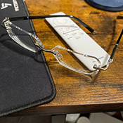
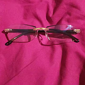
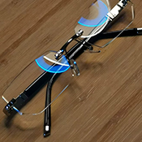
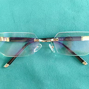
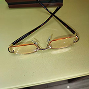

Avaliações de Clientes
Veja o que nossos clientes estão dizendo sobre os Óculos Technos Inteligentes

Carlos
Compra Verificada
Minha visão muda muito ao longo do dia. Esses óculos se ajustam automaticamente e realmente ajudam.

Roberto
Compra Verificada
Comprei para meus pais e eles adoraram. Leves e confortáveis para usar o dia todo.

Ana
Compra Verificada
Uso para leitura, celular e TV. Funcionam bem em todas as situações. Um par faz tudo.

Pedro
Compra Verificada
Viram óculos de sol ao ar livre. Não preciso mais de óculos de sol separados.

Fernanda
Compra Verificada
Estava cansada de trocar entre diferentes óculos. Esses resolveram completamente esse problema.

Margarida
Compra Verificada
Extremamente leves e confortáveis. Às vezes esqueço que estou usando.
Corra! Apenas 72 unidades restantes neste preço!